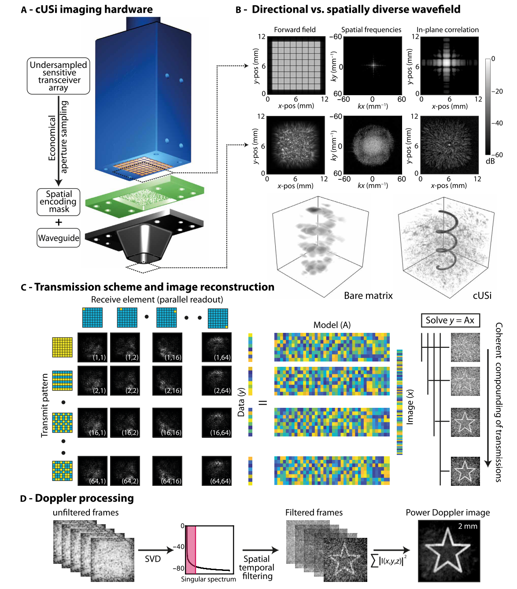
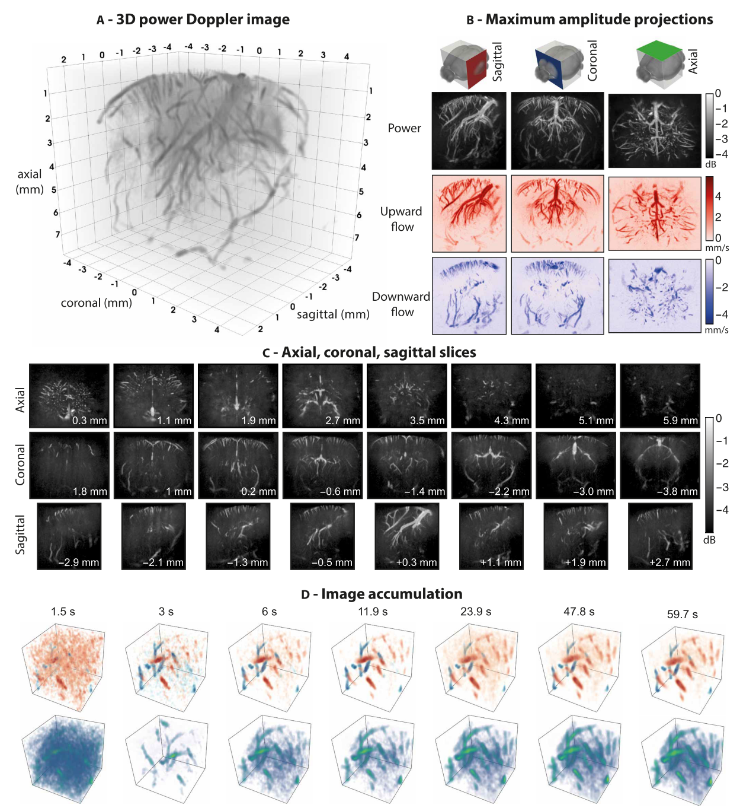

文献周报25.03.1
总述
本周阅读主题：三维计算超声成像
面向大脑血动力学的四维计算超声成像
文章概要
Four-dimensional computational ultrasound imaging of brain hemodynamics
复杂生物系统的四维超声成像由于需要较高的时空采样率，一直以来在技术上存在相当的挑战。本文提出了一种计算超声成像方法（cUSi），使用复杂声场，可以由简单的硬件生成，从而降低了采样率的约束。计算超声成像可以得到清醒和麻醉小鼠大脑血动力学的高分辨率四维超声图像。
引言
超快超声成像（成像帧率大于 5000 fps 的成像技术）在过去一段时间里得到了长足的发展，主要得益于计算设备的发展和并行化技术的广泛应用。但是由于时空采样率的限制，目前的超快成像技术的研究主要集中在二维成像的场景下。成像过程中需要以不低于 5 kHz 的 PRF 发射平面波或发散声波，并且时间和空间的采样率都需要满足奈奎斯特定律。对于三维成像来说，这意味着需要数千个阵元采集原始数据，在技术层面上带来了极大的挑战，难以应用于临床场景中。目前有两种主要的解决方案：
- 采用完整的采样通道和采样率，同时设计相应的专用集成电路（ASIC）对信号预波束成形，从而降低信号处理和图像重建所需要的计算量；
- 采用稀疏阵列进行降采样，同时设计特定的采样孔径实现最小化栅瓣。
此外，成像所需要的典型波长通常在 100 ~ 300 \(\mu m\) 量级，使得回波信号的幅值很低（换能器阵元的大小受到半波长的限制），信噪比难以得到保证。这也带来了一定的挑战。
为了解决上述问题，本文引入了计算超声成像技术。使用大阵元面阵换能器，保证信号采集的灵敏度。此时声场的空间采样率不能满足奈奎斯特定律，并且换能器产生的声场具有较强的指向性，不利于产生高空间分辨率的图像。为此本文在换能器前面设置了一个塑料制造的编码掩膜。通过这种方式可以更均匀地对成像孔径的k-空间进行采样，同时避免出现任何对称性，以免产生栅瓣进而在成像结果中造成伪影。在对系统的三维成像响应进行标定之后，可以使用基于模型的方法进行图像重建。最后针对成像结果实施标准多普勒方法处理，从而得到体素的运动信息。
方法与结果
文章所使用的方法如下图所示。在面阵换能器的基础上增加了一个空间编码蒙版，基于压缩感知的方法实现了空间采样率的降低，从而使用大Pitch换能器阵列得到高分辨率的空间图像。

- (a) 成像系统的渲染图。系统主要包括三个部分：换能器、空间编码蒙版、波导。
- (b) 成像系统和传统超声成像系统之间的对比。在增加了蒙版之后，空间波数域中采样更加均匀，同时空间响应（类似PSF的概念）呈现更强的空间分辨率。此处的数据是从仿真中得到的。带有蒙版的场景，仿真使用的声场激励信号是对系统进行实际测量之后得到的。同时也对一个螺旋结构进行了成像
- (c) 作者采用了一种Hadamard编码的合成孔径框架，并演示了得到的成像结果。
- (d) 为了生成多普勒图像，作者连续发射并采集数据，以大约 400Hz 的速度重建容积图像。得到的数据经过时空滤波，评估每一个体素随时间变化的血流相关功率，得到多普勒图像。
此处存在一个问题，也即作者缺少一种对蒙版进行仿真的有效手段。在实施仿真的时候，直接使用实际测量得到的蒙版声场信号作为仿真的激励。

- (a) 麻醉老鼠大脑的三维渲染结果。图像采用一共8041幅容积图像，通过稳定数据采集得到，采集时间超过 60s 。
- (b) 得到的功率多普勒图像和彩色多普勒图像沿不同方向的最大强度投影图像。
- (c) 不同截面上的切面图。
- (d) 一个 \(2.48\times 2.48\times 2.4 \text{mm}\) 区域内的体素渲染和流动方向渲染结果。
启发与思考
传统超声相控阵成像技术要求换能器的pitch（也即相邻阵元之间的中心距离）不超过典型波长的一半，避免声束偏转和聚焦时的栅瓣对成像结果产生影响。但是在三维容积成像时会带来两个主要的挑战，一是需要的阵元数量非常大，给成像仪器和数据处理带来了极大的压力；二是换能器的宽度和高度都非常小（尤其是在使用的频率比较高时），采集声场信号时候的灵敏度会降低，更容易受到噪声的影响。
此时，计算成像方法体现出了一定的技术优势，可以使用更大的换能器实现信号的发射和采集，通过后处理来保证成像的空间分辨力。